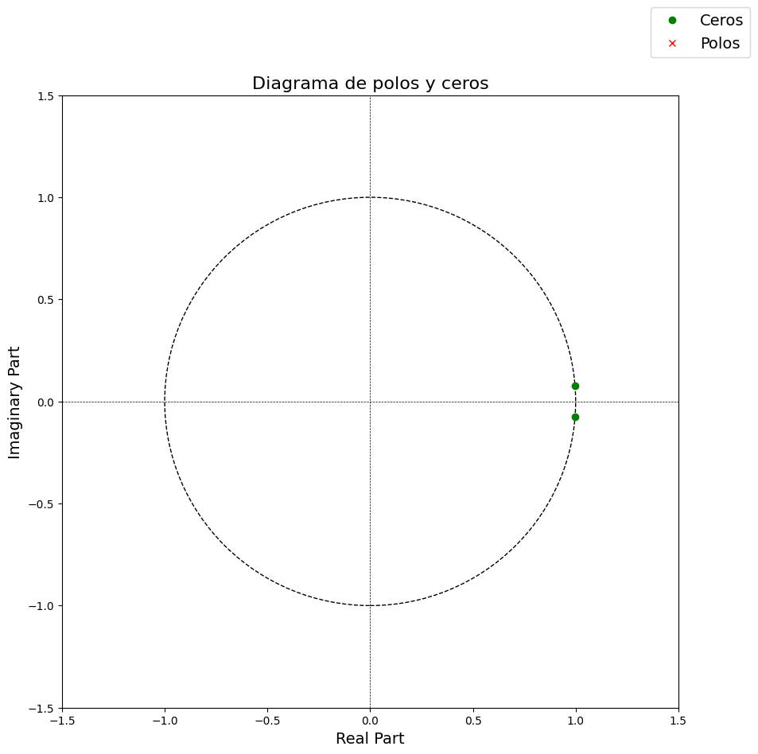
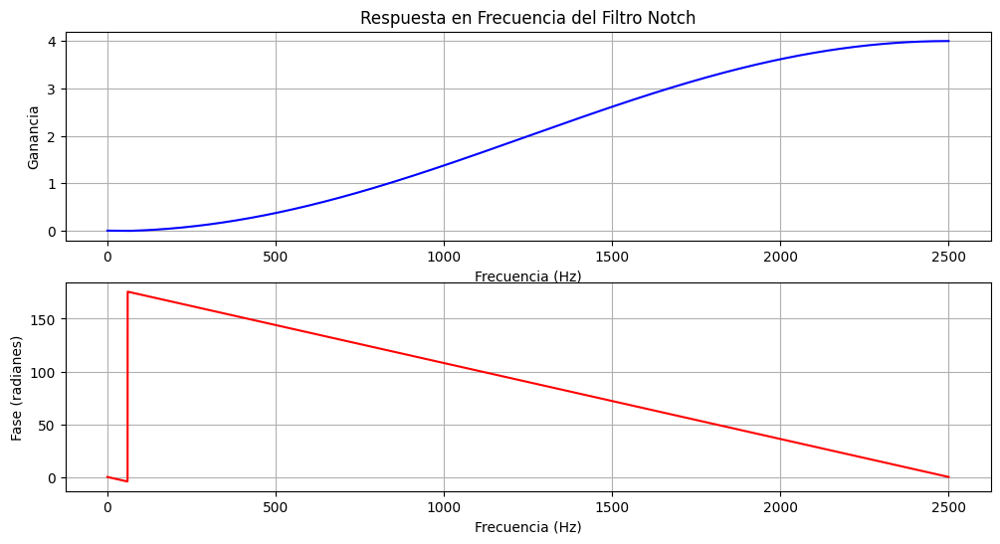
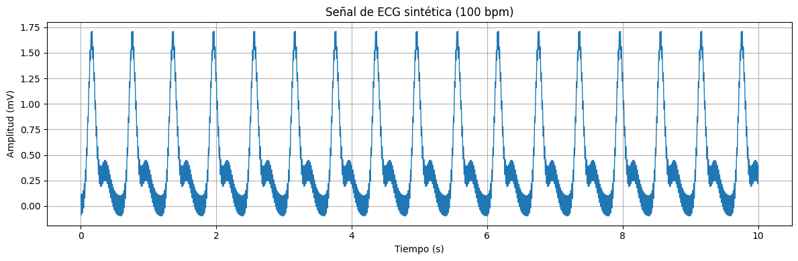
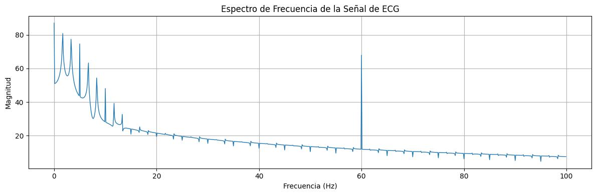
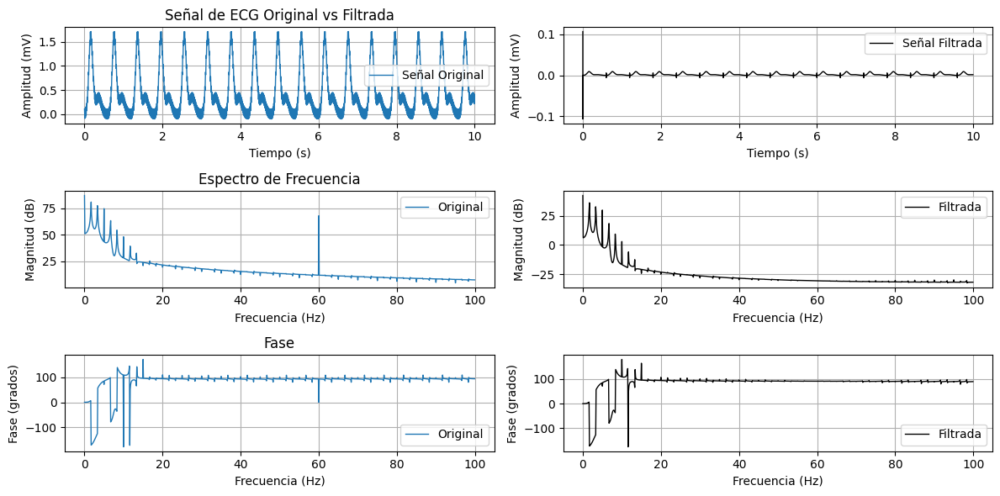

import sympy as sp
# 1. Configurar la impresión bonita de SymPy (opcional, pero recomendado)
# sp.init_printing(use_unicode=True)
# 2. Definir el símbolo 'z' para el polinomio
z = sp.symbols('z')Transformada Z
Un problema común en el procesamiento de bioseñales es eliminar la interferencia de la red eléctrica (50/60 Hz) de, por ejemplo, señales EEG o ECG. Un filtro digital sencillo para eliminar la interferencia de 60 Hz (suponiendo una frecuencia de muestreo \(f_s = 5000\) Hz) es ubicar ceros complejos conjugados en la frecuencia de la interferencia en el plano Z. En este caso, los ceros se ubican en \(z_1 = e^{j2\pi \frac{60}{5000}}\) y \(z_2 = e^{-j2\pi \frac{60}{5000}}\).
# 3. Definir las constantes del problema
f = 60 # Frecuencia de interferencia (Hz)
fs = 5000 # Frecuencia de muestreo (Hz)
# 4. Calcular la frecuencia angular normalizada (omega_0)
# w0 = 2 * pi * (f / fs)
# Usamos sp.pi para mantener la precisión simbólica
w0 = 2 * sp.pi * f / fsprint(f"--- Parámetros Iniciales ---")
print(f"Frecuencia (f): {f} Hz")
print(f"Frecuencia de Muestreo (fs): {fs} Hz")
print(f"Frecuencia Angular Normalizada (w0 = 2*pi*f/fs):")
sp.pprint(w0)
--- Parámetros Iniciales ---
Frecuencia (f): 60 Hz
Frecuencia de Muestreo (fs): 5000 Hz
Frecuencia Angular Normalizada (w0 = 2*pi*f/fs):
3⋅π
───
125# 5. Definir los ceros z1 y z2
z1 = sp.exp(sp.I * w0)
z2 = sp.exp(-sp.I * w0)
print("--- Ceros Definidos ---")
print("z1:")
sp.pprint(z1)
print("\nz2:")
sp.pprint(z2)
--- Ceros Definidos ---
z1:
3⋅ⅈ⋅π
─────
125
ℯ
z2:
-3⋅ⅈ⋅π
───────
125
ℯ
# 6. Crear la función de transferencia H(z) en forma factorizada
# H(z) = (z - z1) * (z - z2)
H_z = (z - z1) * (z - z2)
print("--- H(z) en Forma Factorizada ---")
sp.pprint(H_z)
--- H(z) en Forma Factorizada ---
⎛ -3⋅ⅈ⋅π ⎞ ⎛ 3⋅ⅈ⋅π⎞
⎜ ───────⎟ ⎜ ─────⎟
⎜ 125 ⎟ ⎜ 125 ⎟
⎝z - ℯ ⎠⋅⎝z - ℯ ⎠
# 7. Expandir el polinomio
# SymPy realizará la multiplicación: z*z - z*z2 - z*z1 + z1*z2
H_z_expanded = sp.expand(H_z)
print("--- H(z) Expandido (sin simplificar) ---")
sp.pprint(H_z_expanded)
--- H(z) Expandido (sin simplificar) ---
3⋅ⅈ⋅π -3⋅ⅈ⋅π
───── ───────
2 125 125
z - z⋅ℯ - z⋅ℯ + 1
# 8. Simplificar la expresión expandida
# SymPy aplicará las identidades de Euler:
# z1 * z2 = exp(j*w0) * exp(-j*w0) = 1
# z1 + z2 = exp(j*w0) + exp(-j*w0) = 2*cos(w0)
# El resultado será: z**2 - z*(2*cos(w0)) + 1
H_z_simplified = sp.simplify(H_z_expanded)
print("--- H(z) Expandido y Simplificado ---")
sp.pprint(H_z_simplified)
# 9. Mostrar el valor numérico del coeficiente del coseno
print("--- Verificación de Coeficientes ---")
print("El polinomio resultante es de la forma: z**2 - 2*cos(w0)*z + 1")
coef_cos = 2 * sp.cos(w0)
print(f"Valor del coeficiente '2*cos(w0)':")
sp.pprint(coef_cos)
print(f"\nValor numérico (evaluado): {coef_cos.evalf()}")--- H(z) Expandido y Simplificado ---
122
───
2 3/125 125
z - (-1) ⋅z + (-1) ⋅z + 1
--- Verificación de Coeficientes ---
El polinomio resultante es de la forma: z**2 - 2*cos(w0)*z + 1
Valor del coeficiente '2*cos(w0)':
⎛3⋅π⎞
2⋅cos⎜───⎟
⎝125⎠
Valor numérico (evaluado): 1.99431780052123from scipy.signal import tf2zpk, freqz
import numpy as np
import matplotlib.pyplot as plt
a = np.array([1.0])
b = np.array([1, float(-coef_cos.evalf()), 1])
z, p, k = tf2zpk(b, a)fig, ax = plt.subplots(figsize=(10, 10))
_ = ax.set_title('Diagrama de polos y ceros', fontsize=16)
# Círculo unitario
unit_circle = plt.Circle((0, 0), 1, color="black", fill=False, linestyle="dashed")
ax.add_artist(unit_circle)
ax.set_xlim((-1.5, 1.5))
ax.set_ylim((-1.5, 1.5))
ax.plot(np.real(z), np.imag(z), "go", label="Ceros")
ax.plot(np.real(p), np.imag(p), "rx", label="Polos")
ax.set_xlabel('Real Part', fontsize=14)
ax.set_ylabel('Imaginary Part', fontsize=14)
ax.axhline(0, color='black', lw=0.5, ls='--')
ax.axvline(0, color='black', lw=0.5, ls='--')
fig.legend(fontsize=14)
plt.show()
freqs, h = freqz(b, a, fs=fs, worN=8000)
plt.figure(figsize=(12, 6))
plt.subplot(2, 1, 1)
plt.plot(freqs, np.abs(h), 'b')
plt.title('Respuesta en Frecuencia del Filtro Notch')
plt.xlabel('Frecuencia (Hz)')
plt.ylabel('Ganancia')
plt.grid()
plt.subplot(2, 1, 2)
plt.plot(freqs, np.angle(h)*180/np.pi, 'r')
plt.xlabel('Frecuencia (Hz)')
plt.ylabel('Fase (radianes)')
plt.grid()
def gaussian(x, mu, sigma, A):
"""
Genera una función gaussiana.
Parámetros:
- x: array de tiempos
- mu: posición central de la gaussiana
- sigma: desviación estándar
- A: amplitud
"""
return A * np.exp(-((x - mu) ** 2) / (2 * sigma**2))
def simulate_ecg(duration=10.0, fs=500, heart_rate=70):
"""
Simula un ECG sintético basado en la superposición de ondas gaussianas.
Parámetros:
- duration: duración de la señal en segundos
- fs: frecuencia de muestreo en Hz
- heart_rate: frecuencia cardiaca en latidos por minuto
Devuelve:
- t: vector de tiempos
- ecg: señal simulada de ECG en mV
"""
dt = 1 / fs
t = np.arange(0, duration, dt)
rr = 60 / heart_rate # intervalo RR en segundos
# Inicializar señal
ecg = np.zeros_like(t)
# Parámetros de las ondas (posiciones relativas en segundos)
# P wave
p_amp, p_dur, p_delay = 0.25, 0.09, 0.16
# Q wave
q_amp, q_dur, q_delay = -0.05, 0.066, 0.166
# R wave
r_amp, r_dur, r_delay = 1.6, 0.1, 0.166
# S wave
s_amp, s_dur, s_delay = -0.25, 0.066, 0.19
# T wave
t_amp, t_dur, t_delay = 0.35, 0.142, 0.36
# Generar cada latido
for beat_start in np.arange(0, duration, rr):
mask = (t >= beat_start) & (t < beat_start + rr)
tb = t[mask] - beat_start
ecg[mask] += gaussian(tb, p_delay, p_dur / 2, p_amp)
ecg[mask] += gaussian(tb, q_delay, q_dur / 2, q_amp)
ecg[mask] += gaussian(tb, r_delay, r_dur / 2, r_amp)
ecg[mask] += gaussian(tb, s_delay, s_dur / 2, s_amp)
ecg[mask] += gaussian(tb, t_delay, t_dur / 2, t_amp)
return t, ecg+0.1*np.cos(2*np.pi*60*t)# Parámetros de simulación
DURATION = 10 # segundos
FS = 5000 # Hz
HR = 100 # latidos por minuto
# Generar señal
t, ecg_signal = simulate_ecg(duration=DURATION, fs=FS, heart_rate=HR)
# Graficar resultado
plt.figure(figsize=(12, 4))
plt.plot(t, ecg_signal, linewidth=1)
plt.title(f'Señal de ECG sintética ({HR} bpm)')
plt.xlabel('Tiempo (s)')
plt.ylabel('Amplitud (mV)')
plt.grid(True)
plt.tight_layout()
plt.show()
# Analisis Fourier de ECG -- Dominio de frecuencia
spectrum = 20*np.log10(np.abs(np.fft.fft(ecg_signal)))
freqs = np.fft.fftfreq(len(t), 1/FS)
n_freqs = 1000#len(freqs)//2
plt.figure(figsize=(12, 4))
plt.plot(freqs[:n_freqs], spectrum[:n_freqs], linewidth=1)
plt.title('Espectro de Frecuencia de la Señal de ECG')
plt.xlabel('Frecuencia (Hz)')
plt.ylabel('Magnitud')
plt.grid(True)
plt.tight_layout()
plt.show()
from scipy.signal import lfilter
# Filtrar la señal de ECG con el filtro Notch diseñado
filtered_ecg = lfilter(b, a, ecg_signal)
spectrum1 = 20*np.log10(np.abs(np.fft.fft(ecg_signal)))
spectrum3 = np.angle(np.fft.fft(ecg_signal))*180/np.pi
freqs = np.fft.fftfreq(len(t), 1/FS)
n_freqs = 1000#len(freqs)//2
spectrum2 = 20*np.log10(np.abs(np.fft.fft(filtered_ecg)))
spectrum4 = np.angle(np.fft.fft(filtered_ecg))*180/np.pi
# Graficar señal original y filtrada
plt.figure(figsize=(12, 6))
plt.subplot(3, 2, 1)
plt.plot(t, ecg_signal, label='Señal Original', linewidth=1)
plt.title('Señal de ECG Original vs Filtrada')
plt.xlabel('Tiempo (s)')
plt.ylabel('Amplitud (mV)')
plt.legend()
plt.grid(True)
plt.subplot(3, 2, 2)
plt.plot(t, filtered_ecg, label='Señal Filtrada', color='black', linewidth=1)
plt.xlabel('Tiempo (s)')
plt.ylabel('Amplitud (mV)')
plt.legend()
plt.grid(True)
plt.subplot(3, 2, 3)
plt.plot(freqs[:n_freqs], spectrum1[:n_freqs], label='Original', linewidth=1)
plt.title('Espectro de Frecuencia')
plt.xlabel('Frecuencia (Hz)')
plt.ylabel('Magnitud (dB)')
plt.legend()
plt.grid(True)
plt.subplot(3, 2, 4)
plt.plot(freqs[:n_freqs], spectrum2[:n_freqs], label='Filtrada', color='black', linewidth=1)
plt.xlabel('Frecuencia (Hz)')
plt.ylabel('Magnitud (dB)')
plt.legend()
plt.grid(True)
plt.subplot(3, 2, 5)
plt.plot(freqs[:n_freqs], spectrum3[:n_freqs], label='Original', linewidth=1)
plt.title('Fase')
plt.xlabel('Frecuencia (Hz)')
plt.ylabel('Fase (grados)')
plt.legend()
plt.grid(True)
plt.subplot(3, 2, 6)
plt.plot(freqs[:n_freqs], spectrum4[:n_freqs], label='Filtrada', color='black', linewidth=1)
plt.xlabel('Frecuencia (Hz)')
plt.ylabel('Fase (grados)')
plt.legend()
plt.grid(True)
plt.tight_layout()
plt.show()